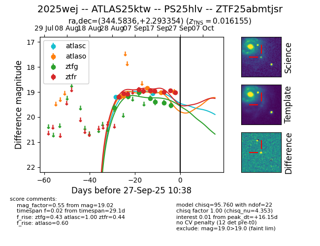
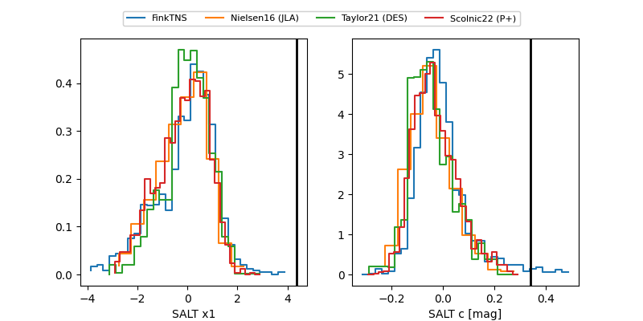

FINK: ZTF25abmtjsr
Lasair: ZTF25abmtjsr
ALeRCE: ZTF25abmtjsr
TNS: 2025wej
YSE: 2025wej
ZTF25abmtjsr (ztf,fink)
2025wej (tns,yse)
ATLAS25ktw (atlas)
PS25hlv (panstarrs)
equatorial (ra, dec) = (344.5836,+2.29335)
galactic (l, b) = (75.6373,-49.89962)


last atlasc=19.06, atlaso=18.99, ztfg=19.52, ztfr=19.02
2 atlasc, 6 atlaso, 8 ztfg, 10 ztfr detections